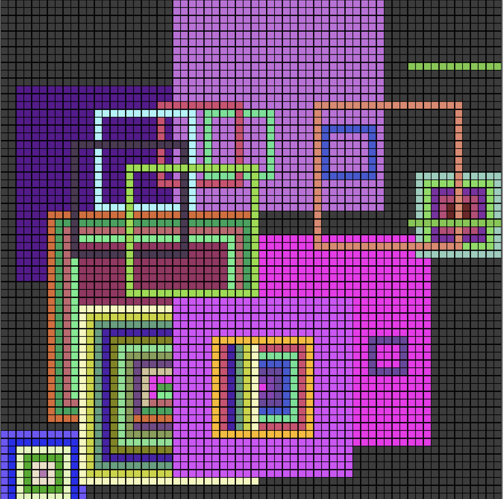

Recursion Visualizer

This project, called Recursion Visualizer, is my final project for a Creative Coding class I took Fall 2021. It is a program written in Processing that represents the way that I think about recursion, illustrated via coloring squares in a grid. This was my first time doing any sort of art with code, so it was a blast to create some fun visuals!
I am someone who really needs to visualize things in order to understand them well. Whenever I try to solve algorithms or plan out a new project I try to write everything down and draw out pictures or graphs. When we were assigned to create some sort of "drawing tool" for this Creative Coding class I tried to think of what was most meaningful to me and what I found most important. I decided that for me, the perfect intersection of code and visualization was recursion.
The way that I tend to think of recursion is that you start with some big set, and then go down and down the stack until you reach the base case, at which point you go back up the stack with each level receiving information from the one before it. The first reucrsive bit is the overall grid, which is created by recursively calling a function that draws squares on smaller and smaller widths/heights, with different origin points. You can click the plus or minus buttons, or press "p" or "m" to increase or decrease the recursion level and make the grid bigger or smaller.
Then, the way that the actual visualizer works is that when you hold down your mouse on a square it "grows" a square outward, ring by ring. The final grown square you get when you release your mouse represents the set that you start out with in a recursive function.
Once the grown square has been created and the mouse is released, the "recursion" starts. Beginning with the outermost ring, representing the full version of the set, each ring is colored in, one at a time, to show the recursive calls getting smaller and smaller. Once the colored ring hits the center, representing the base case, a color is chosen and the recursive call stack begins to be resolved. Each ring is colored in based on the ring before it, resolving the recursive call stack where each call is based on the call before it.

In addition to the pure visualiztion mode, there is also a fun rainbow mode that allows a bit more flexibility and freedom. In this mode, the rings are created based on where the mouse is and are colored randomly, so it isn't a great representation of recursion but its fun to play with and to create art with!